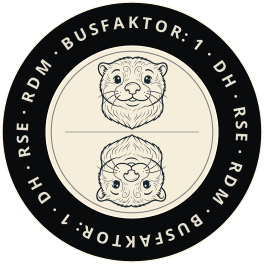
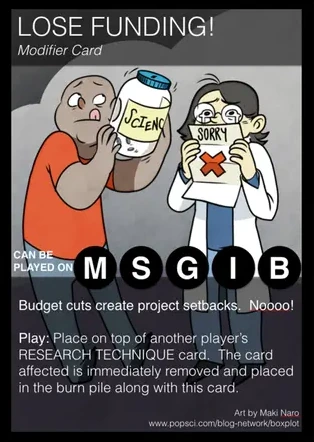
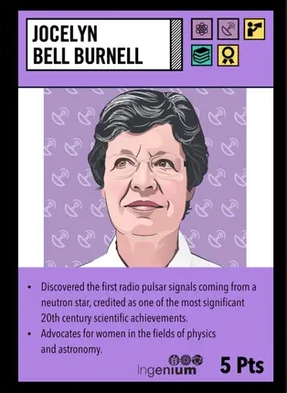
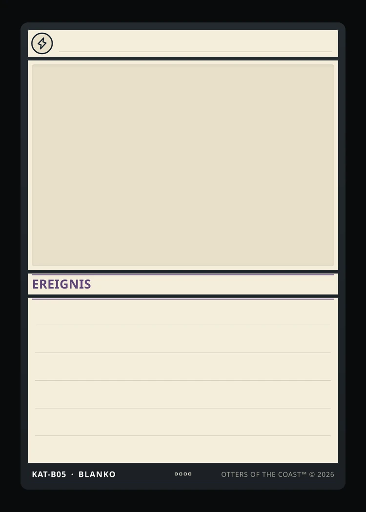
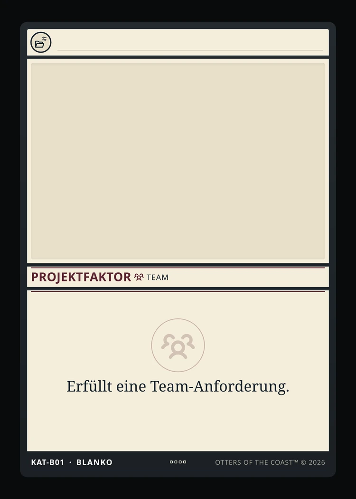

Busfaktor:1
Endlich spielend scheitern.
Ein Kartenspiel über den DH-, RDM- und RSE-Projektalltag.
Und alles, was nicht im Förderantrag stand.



Scheitern, aber jetzt
mit Sammelwert.
Ursprünglich war das Spiel als einfaches DH-Katastrophen-Bingo für die Anti-Konferenz „Scheitern in den Digital Humanities“ konzipiert: am 2. Oktober 2026 im Berliner Mehringhof, organisiert vom Netzwerk junge Digital Humanities in Berlin und Brandenburg. Ein passender Ort, um über das zu sprechen, was im Forschungsalltag schiefgeht.
Doch mit „Bingo des Scheiterns“ war bereits ein eigenes Kennenlernspiel eingereicht. Also wurde aus der Bingo-Idee „Busfaktor: 1“: ein Sammelkartenspiel über den Alltag in Digital Humanities, Research Software Engineering und Forschungsdatenmanagement.
Die bekannten Katastrophen bleiben – von Excel als Datenbank bis zum ungetesteten Backup. Jetzt lassen sie sich sammeln, tauschen und ausspielen. Und liefern einen Anlass, die eigenen Erfahrungen gleich mit auf den Tisch zu legen.

Mechanik geerbt.
Alltag erlebt.
Die Spielmechanik von „Busfaktor: 1“ basiert auf der PHYLO-Variante „Process of Science“. Ihr Grundgedanke passt zum Forschungsalltag: Projekte brauchen passende Ressourcen, Ereignisse verändern die Bedingungen, und Kooperation hilft dabei, Vorhaben gemeinsam voranzubringen.
Als Vorbilder dienten die Decks der Genetics Society of America sowie „WWEST Women in Science and Engineering“ und „Ingenium Women in Science and Engineering“. Die hier gezeigten Karten stammen aus diesen drei PHYLO-Sets.
Für „Busfaktor: 1“ wurde daraus ein Spiel über Projekte in Digital Humanities, Research Software Engineering und Forschungsdatenmanagement. Aus Ressourcen werden die Projektfaktoren Team, Daten, Betrieb und Methode; Ereignisse und gemeinsam genutzte Faktoren bringen Veränderung und Kooperation ins Spiel. Die Regeln sind für diese Umsetzung überarbeitet und angepasst. Karten, Texte und Motive wurden eigens dafür entwickelt.



Sydney Ang, Genevieve Leduc-Robert, Lu Li, and Sam MacKinnon Beispielkarten · CC BY-NC-ND 4.0, unverändert
GSA/PHYLO (Art: Maki Naro) · WWEST/WISE (Art: Ping Zhu) · Ingenium (nineSixteen Creative)
Alle Originaldecks: phylogame.org/decks ↗ · Lizenzen: phylogame.org/licenses ↗


Kleine Auflage.
Kalkulierte Knappheit.
Die Anti-Konferenz-Edition versammelt 82 Motive auf 231 Karten – von alltäglichen Projektproblemen bis zu seltenen Glücksfällen.
Zur Auflage gehören 127 Common mit 28 Motiven, 61 Uncommon mit 27 Motiven, 34 Rare mit 18 Motiven und 9 Mythic mit neun Motiven.
Für die Anti-Konferenz-Edition wurden ein Starterset mit 74 Karten und 13 Booster mit jeweils zwölf Karten produziert. Acht der Booster enthalten eine Mythic-Karte mit Hologramm-Effekt.
Die gedruckte Auflage ist klein. Alle Motive lassen sich aber auch online entdecken und als Druckvorlage herunterladen – zum Ausprobieren, Weiterspielen und Wiedererkennen.
Unbefristete StelleDie Aufgabe war immer dauerhaft.
Die Stelle jetzt auch.
Spielen. Forken.
Weiterentwickeln.
Jedes Projekt kennt Geschichten, die in diesem Set noch fehlen. Eine hartnäckige Übergangslösung, ein unerwarteter Rückschlag oder eine Zusammenarbeit, die am Ende doch alles rettet: Daraus kann eure nächste Karte werden.
Im Kartendesigner könnt ihr mit einer leeren Karte beginnen oder eine Karte aus dem Set als Vorlage wählen. Gebt ihr einen Titel, eine Pointe und ein Bild; Kartenart und Regelbausteine wählt ihr direkt im Formular. Den fertigen Entwurf könnt ihr herunterladen und ausdrucken.
Regeln, Kartendaten und Renderer stehen offen zur Verfügung. Ihr könnt das Repository forken, das Spiel an euren Projektalltag anpassen und eigene Varianten entwickeln.


